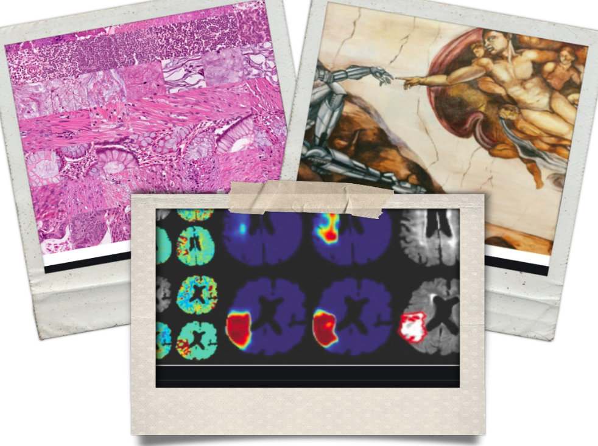
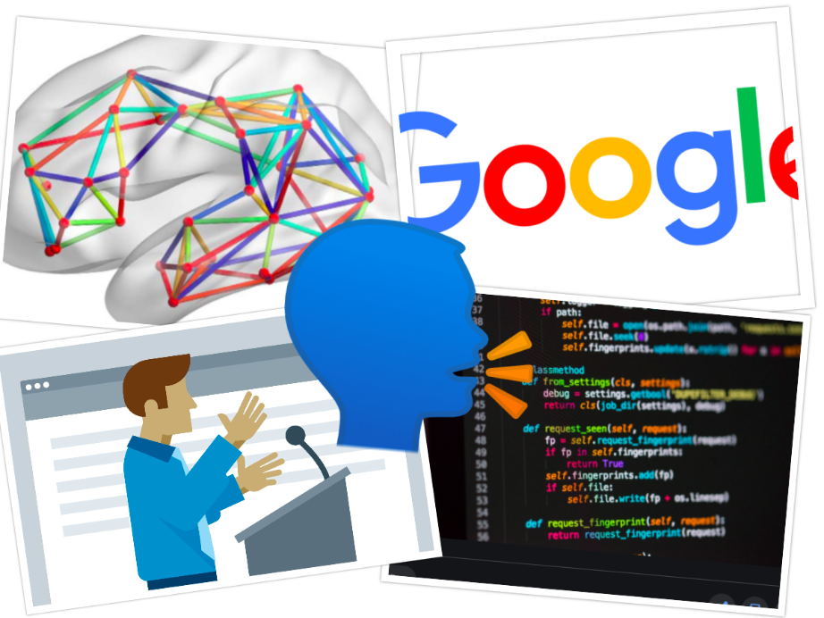
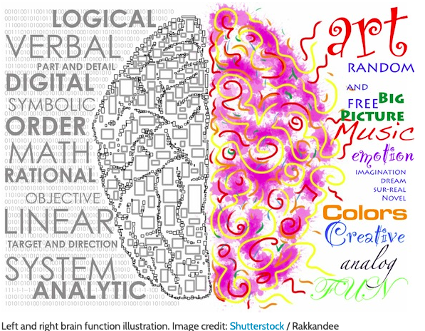
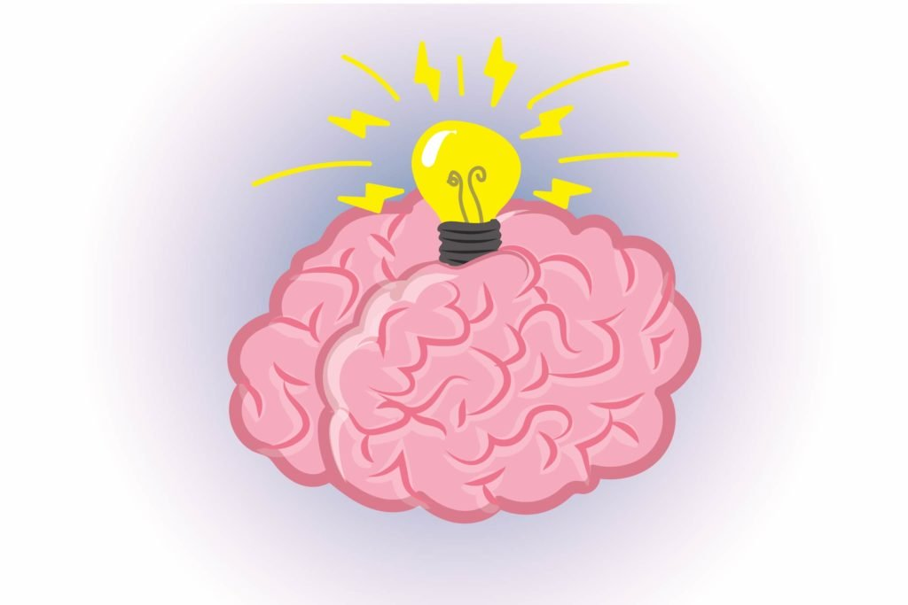

Machine versus Pathologists : EPIC battle in the Brain Tumor Diagnosis! Results revealed below

Among all the negativity surrounding Covid-19 this year, a major technological milestone in brain tumor diagnosis via deep learning has given a small reason to smile and bring on some positivity and hope. The breakthrough has the potential to permanently change the way the brain tumors are diagnosed. I present my views on this amazing technology, which should be carefully watched for time to come.
Brain tumors therapy involves multiple steps. The first is to know the type of tumor before initiating treatment. It indicates, nature of the tumor(for eg. infectious versus cancerous) , grade (high or low/ benign / malignant) and the possible course of treatment(antibiotics/radiation/chemo). During the process of diagnosis, often, a small bit of the tumor is sent for analysis under the microscope. Through the powerful eyes of a microscope, Neuro-pathologists who are expert in pattern recognition, decide what category a tumor belong to. The process of getting an accurate diagnosis can stretch up to a few days if not a week. In some cases, rapid diagnosis is possible while the surgery is performed, but it involves availability, logistics, and coordination at various levels which makes the procedure a multistep, highly neuropathologist dependent and time-consuming, making it prone to the errors.
In a eureka moment equivalent, the artificial intelligence-enabled computer algorithm was able to diagnose tumor types successfully in less than a minute! In a study published in Nature, Hollon et al, trained a computer algorithm using deep learning protocol, to learn “pattern recognition” ability, very similar to a trained Neuropathologist with astoundingly accurate results (94.6% accuracy), WITHOUT human intervention! It is a landmark moment for those working on Brain Tumors. In less than three minutes, artificial intelligence-enabled software enabled a tumor type diagnosis, where this could take about a week for a routine or half an hour(without confirmation) for a “frozen section”. In comparison, “human” reporting accuracy was 93.9%. There was no overlap in errors between the AI and the neuropathologists. This is truly remarkable and I do not think the day is far, when algorithm, would also tell you instantaneously the type of tumor that’s being operated on, the best surgical strategy, tailor-made chemo/gene/vaccine-based therapy to target the tumor. Though the achievement may look like a small step now, in the future, it will pave way for the AI to strongly impact patient care related to the Brain tumors.
Having said that, AI-based protocols require BIG data sets to achieve accuracy, therefore if the disease is rare, and the data set is sparse, then the accuracy of AI will be a limitation. Secondly, very often, various other factors apart from image/pixel characteristics/ are utilized in hypothesis formation such as patient’s age, imaging findings, clinical history, etc. These “classifiers” are currently hard to incorporate in the existing deep learning protocol, contributing to the errors. Therefore, to summarise, this technique in the current state cannot replace NeuropathoIogists and nor it should. However, it certainly is ready to be utilized as a tool to improve the speed and accuracy with which a preliminary diagnosis is made.
Reference:
Hollon TC, Pandian B, Adapa AR, et al. Near real-time intraoperative brain tumor diagnosis using stimulated Raman histology and deep neural networks. Nat. Med. 26(1), 52–58 (2020)
Created on:17/07/2020
Updated on:17/07/2020
What happens to the brain of a programmer while coding?

According to the researchers - Prof. Dr. Janet Siegmund, Chair of Software Engineering at Chemnitz University of Technology, Prof. Dr. Sven Apel, Chair of Software Engineering at Saarland University and Dr. André Brechmann, head of the special laboratory for non-invasive imaging at the Leibniz Institute of Neurobiology in Magdeburg - Programming is like "talking". Talking is the vocal processing of appropriately "organised" thoughts. With non invasive tools, it was found, that the network that is responsible for langauge generation is activated when a programmer codes in a software. This means computer programmers are constantly "talking" to oneself "mentally". This doesnt come as a surprise as we know and through my personal experience, learning to code in many ways is akin to learning a new language. As with the normal language that you and me speak on a daily basis, computer language too, is bound by syntax, vocabulary, grammer, indentation, usage of memory etc. Therefore some similarity is expected and now proven as well.
Where is the language area located in the Brain?
The conventional view is that, in a large majority, the area of the Brain that is responsible for "Language" is located on the left hemisphere, just above the temple. However, this view has been questioned now. The emphasise is on the millions of interconnected nodes rather than a single location, and it's this network that subserves the function of Language. In the technical parlance, these nodes may be imagined as various servers that Google has placed across the world. These servers work, syronously and produce the output, whenever a user enters "Despacito" on youtube search bar, from any corner of the world! It makes the system, fast, efficient and safe. Something mother nature had planned and executed millions of yeard ago!!
Whenever there is a tumor located close the areas or network responsible for speech or language, every attempt is made to keep them safe from surgical trauma. There are few ways to do it.
1. Functional MRI (fMRI) - This is like a standard MRI, but, while a MRI is going on, specific task such as reading, vocalizing etc are performed. This lights up the important structures subserving language.
2. Diffusion tensor imaging (DTI) - This is again like an MRI. But various signal adjustments are made and the computers traces and carves out various connections between the "node" of the network as we talked about. The data from DTI and fMRI is used while surgery is being done so "geo-map" the network.
3. In the operation theatre - While the patient is "awake" during the procedure, she / he is asked to read, write etc. Simultaneoulsy, the brain structures are stimulated with a small amount of current. If the area falls within the language network, there is often a pause in patient's speech. Hence an entire area can be mapped out so that a safe excision of the tumor can be done without harming the vital structures.
Please do write up if you do have clarifications.
To see the location of google servers near you click HERE!
To think about the Science we just discussed and enjoy the song Despacito click HERE!
Created on:06/06/2020
Updated on:07/06/2020
Are you a lefty or a righty?

Right Brain versus Left Brain
For many centuries, it is thought that the left brained are more analytical while right brained are more creative. Therefore people are either left dominant or right dominant.
Take this test HERE to see how much are you left brained versus right brained(external link). Its fun. Compare with your friends. Don’t forget to come back again and read the portion below. It gets more intriguing!!! Lets BEGIN!!
In neurosciences, the word left and right indicates dominance of one half of the brain over other. The parameter that is chosen to define dominance of one half of the brain is dependent on the function it subserves. To understand this in a very simple way, language comprehension and generation is the modality that is equated with dominance in most. Memory, also is implicated in ascribing dominance. For example verbal memory (ability to recall words and sentences spoken) is located in the dominant hemisphere. In large majority, the left part of the brain is dominant. Dominant for language and some forms of memory. However, it doesn’t mean that the rest of the brain is not participating. In fact, few studies show that there is no strict demarcation of language area in the brain. In fact, it is the dense neural connectivity within the brain, that subserves these functions. Hence dominance may not be "location" specific but "network" oriented. Personality traits that makes “you” is not located in one half but rather it is due to the presence of many areas in both halves, interspersed and densely connected with millions of nerve fibres. Therefore, it is unlikely that logic of Dr Jekyll and and creativity of Mr Hyde are located discretely in each half of the brain.
Created on:20/05/2020
Updated on:20/05/2020
Brain - The master controller!

The Gigantic supercomputer - 3 millon hours of TV shows - 300 years of show time!!!!
The human brain has about one billion neurons(cells). More than 1,000 connections exist between each neurons, leading to a trillion superconduting junctions. These neurons orchestrate and coordinate their activites so that each one helps with several functions such as memories, at a time,. This humungously increases the brain’s storage capacity to something closer to around 2.5 petabytes (or a million gigabytes). For comparison, if your brain worked like a digital video recorder in a television, 2.5 petabytes would be enough to hold three million hours of TV shows. You would have to leave the TV running continuously for more than 300 years to use up all that storage!!!
The human brain is responsible for keeping your body running all day long. It not only helps people think and learn new things, but it also controls your movement and speech, too. The brain is part of the central nervous system and receives tons of information. Some more fascinating facts to follow.
Ouchhhhh...Pain??? Brain can't feel it!
We operate on Brain sometimes keeping patient awake!! The brain has layers of coverings and blood vessels that contain pain receptors, the brain itself has zero. When a person has a headache, for example, it's often thought of as pain stemming from the brain, but this is actually not the case. The muscles and skin surrounding the brain, however, can feel pain.
Our brain is super hungry!
Your brain might account for only about 3 percent of your body weight, but it receives about 30 percent of the blood being pumped by your heart. It takes the brain about 1/10,000th of a second to respond to something and generate an action.
Almost half of a child's energy goes to fuel his or her brain
In order for the brain to stay running at top-notch, it requires significant amounts of energy. And this is even more true for young children who are still learning, processing, and developing at a fast rate. Scientists at Northwestern University discovered recently that in the preschool years, when a child's brain development is faster, physical growth is slower, possibly to save more energy for the developing brain. Conversely, during puberty, when physical growth is faster, brain development is slower — which may come as no surprise to parents of teenagers!
References
https://www.scientificamerican.com/article/what-is-the-memory-capacity/
Created on:07/05/2020
Updated on:07/05/2020
10 Things you didn't know about your spine
1. The bones in your spine serve two important functions.
The adult spine consists of 26 bones: 24 vertebrae, the sacrum (near the bottom) and coccyx (at the end).
The bones provide a column of support, bearing the weight of the head, neck and trunk and allowing us to maintain an upright position, whether standing or sitting.
Your spine is upright but surprisingly not straight. There are in fact four curves to the spine to prevent us from toppling forward.
Pregnancy can distort the lower curve, leading to back pain.
2. The bones also protect the spinal cord
The fibres ascending the spinal cord carry sensory information to the brain from skin, joints and muscles; the descending fibres carry instructions to move the muscles.
The human body has about 10 million sensory neurones and half a million motor neurones.
Other fibres in the spinal cord form the autonomic nervous system, controlling functions such as heart rate and digestion.
3. A lot can go wrong with the spine
It can bend the wrong way, such as in scoliosis, kyphosis or lordosis, it can be severed in spinal cord injury, the nerves can lose their covering in multiple sclerosis, tumours can compress the nerves and infection and abscesses can form.
4. The cervical (neck) spine allows amazing movement of the head
“Your head is relatively massive. It sits atop the spinal vertebrae like a soup bowl on the tip of a finger”!
Connections between the top vertebra and the skull allow us to nod and look upward and downward. Connections between the top and second vertebrae allow us to move our head from side to side: a clever piece of engineering indeed.
5. A cross section of the spinal cord shows a grey butterfly structure on a white background
The central grey part consists of the cell bodies of the nerves: the control centres where the DNA is stored.
The surrounding white part contains the fine branches of the nerve cell that can stretch from the brain to your fingertips. Nerve cells are the longest cells in your body and many are up to a metre in length.
6. You don’t have a tail
The bottom bone of the spine (the coccyx) is sometimes called the tailbone. It’s not a tail, but instead an important anchoring point for many ligaments and muscles of the pelvis.
If you fall and damage the coccyx, it’s hard to walk. The name coccyx is derived from cuckoo as the bone is shaped like a cuckoo’s beak.
7. Your spine is in constant communication with the brain
This is most clearly demonstrated when the connection is lost in spinal cord injury.
Christopher Reeves suffered a cut across his spinal cord below the first vertebra, losing all sensation and movement below the neck.
8. You are taller in the morning… and in space
A lack of gravity pulling the vertebrae close together means that astronauts can grow 5cm taller in space and you are 1cm taller in the morning.
NASA is studying further effects of microgravity on the length of the spine.
9. What’s a spinal tap?
In this case, nothing to do with rock music. Your spinal cord is surrounded by clear fluid to cushion it from injury.
Withdrawal of this fluid using a needle is called a spinal tap or lumbar puncture. It can help diagnose infection and treat headaches.
10. The spine in art and mythology
The vertebra at the top of the spine is called Atlas. It is named after Atlas who, in Greek mythology, holds the world on his shoulders: just as this bone holds the head up high.
A hidden image of the spinal cord is thought to have been depicted by Michelangelo, in his painting on the ceiling of the Sistine Chapel in Rome.
https://www.readersdigest.co.uk/health/health-conditions/10-things-you-didnt-know-about-your-spine
Created on:07/05/2020
Updated on:07/05/2020